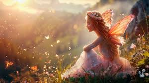
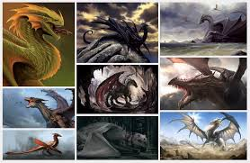
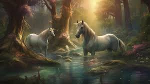

Сохраняя волшебство:
Как защитить фей, драконов и единорогов от
исчезновения?
Почему так важно защищать фей?
Феи — одни из самых таинственных и хрупких существ в нашем мире. Они поддерживают баланс природных сил, помогая растениям цвести и магическим лесам процветать. Без фей многие магические экосистемы могли бы прийти в упадок.
Однако в последние десятилетия феи стали сталкиваться с угрозами со стороны людей. Неконтролируемое использование магии и разрушение лесов лишают их домов и привычной среды обитания. Без фей магия лесов ослабевает, и это негативно влияет на все живые существа вокруг.
Защита фей требует от нас осознанности и уважения к природе. Мы должны помнить, что эти маленькие существа — хранители.
Драконы — миф или реальность?
Драконы всегда вызывали страх и восхищение в человеческих сердцах. Эти величественные существа являются символом силы, мудрости и величия. Однако сегодня драконы становятся всё более редкими, и многие маги задаются вопросом, остались ли они в нашем мире.
На самом деле, драконы по-прежнему существуют, но скрываются в отдалённых уголках мира, опасаясь столкновений с людьми. Охота на драконов и незаконная добыча их чешуи и яиц привели к значительному сокращению их популяции. Важно помнить, что драконы — не просто мифические создания, а важная часть магической экосистемы.
Если мы хотим сохранить драконов для будущих поколений, нам необходимо активно защищать их ареалы обитания и прекратить незаконные действия, направленные против них. Драконы заслуживают нашего уважения и помощи, а не страха и насилия.
Единороги — воплощение чистоты и невинности
Единороги всегда были символом чистоты и магической гармонии. Эти прекрасные создания живут в самых девственных уголках природы и избегают контактов с людьми. Их магия настолько сильна, что считается, что один единорог может очистить целый лес от негативных воздействий.
Однако за последние столетия их популяция значительно сократилась. Охота на единорогов и разрушение их ареалов обитания — главные причины их исчезновения. Человеческая жадность и желание заполучить магические рога этих существ ставят их под угрозу полного исчезновения.
Защита единорогов — это не просто задача для магов, но и для всех, кто верит в силу природы. Мы должны приложить все усилия, чтобы сохранить их редкую магию и передать её будущим поколениям.